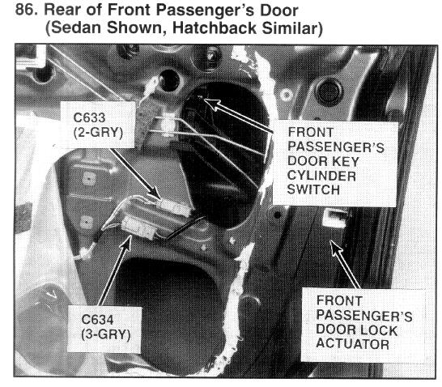

Operation CHARM
: Car repair manuals for everyone.
Home
>>
Acura
>>
1994
>>
Integra (RS, LS) L4-1834cc 1.8L DOHC FI
>>
Repair and Diagnosis
>>
Accessories and Optional Equipment
>>
Sensors and Switches - Accessories and Optional Equipment
>>
Lock Cylinder Switch
>>
Locations
>>
Front Passenger's Door Key Cylinder Switch
Front Passenger's Door Key Cylinder Switch

Rear Of Front Passenger's Door (Sedan Shown, Hatchback Similar)